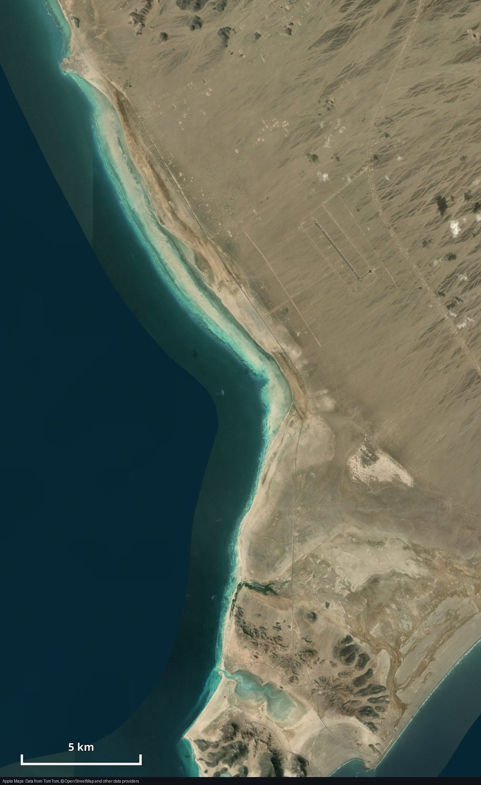
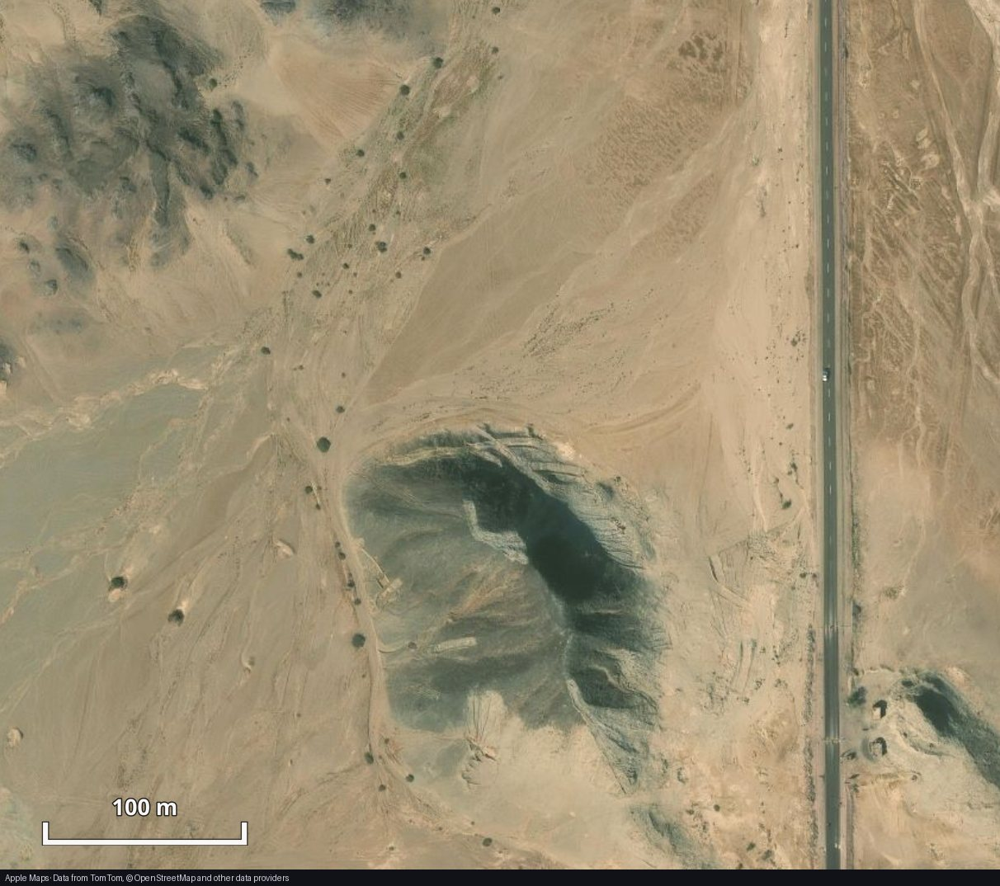
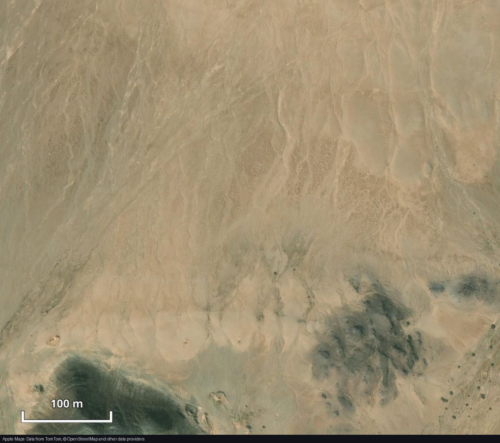
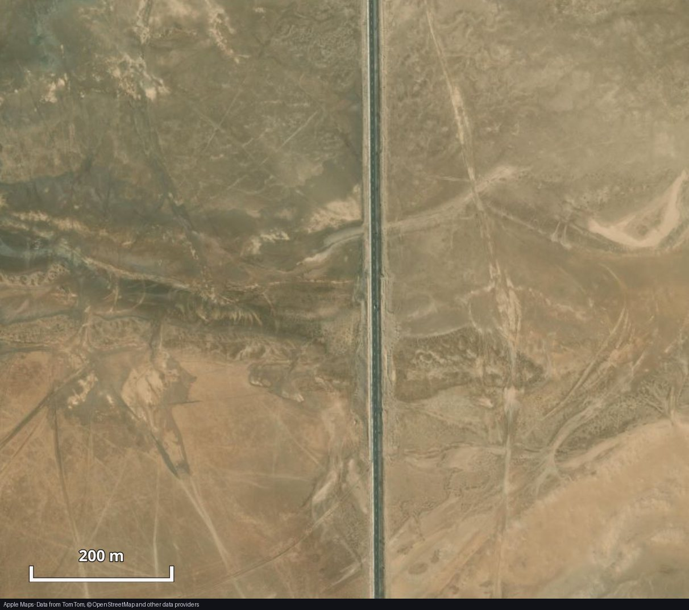
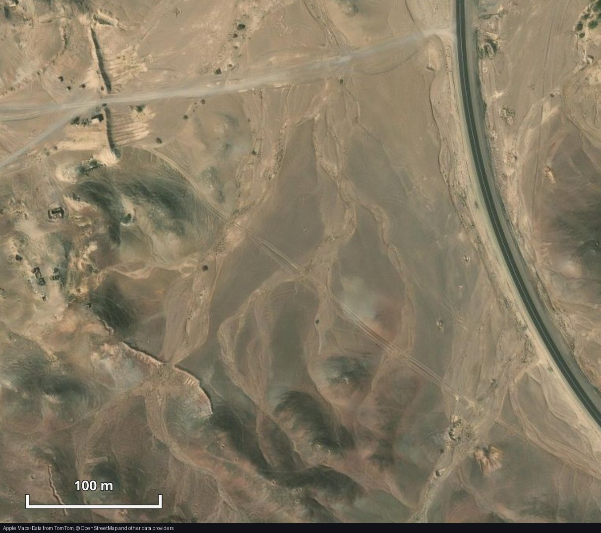
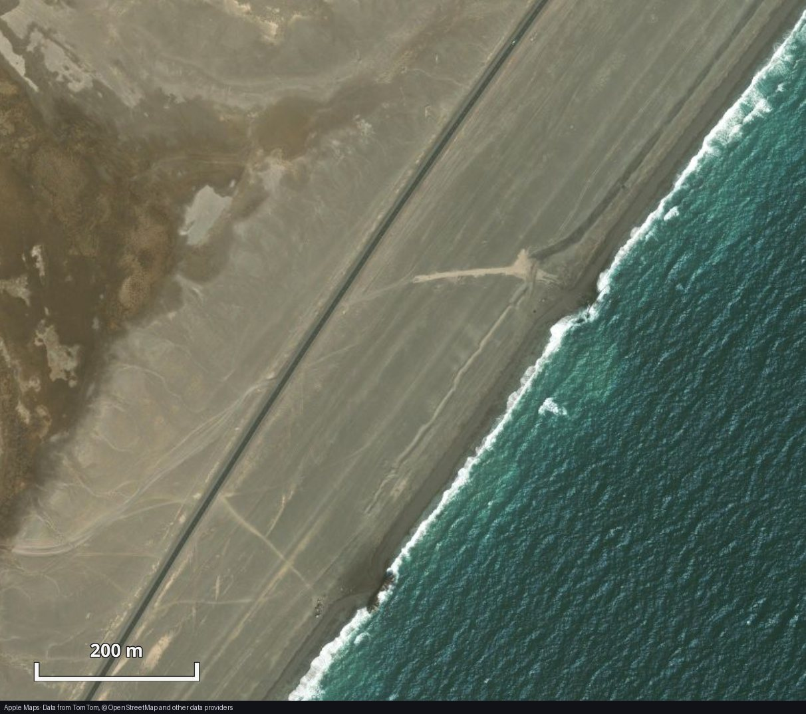
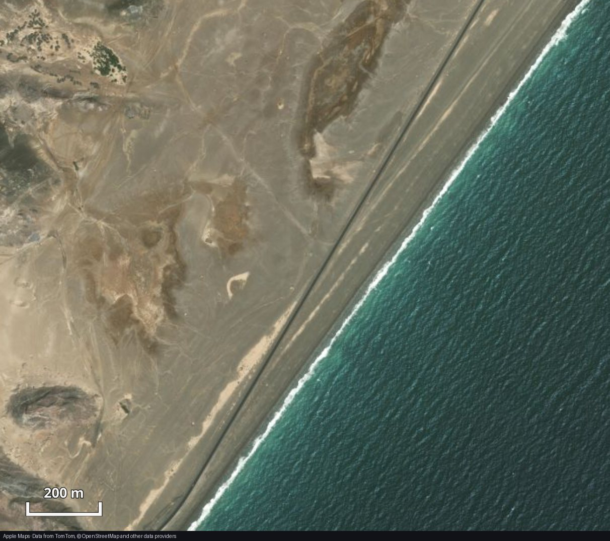

On 9 October 2026, the Saudi ambassador to Yemen posted that the strait of Bab al-Mandab had been cleared (Asharq Al-Awsat, 9 Oct). The next day, the government's own military sources told AFP that the strait was not secured (The New Arab, 10 Oct). Five weeks later, on 15 November, the southern forces left the peninsula to defend Aden (Al-Monitor, 15 Nov), and two Houthi videos toured what they had left behind on the road.
This article puts the announcements next to the ground. I geolocated the government-side footage posted from this front between September and November, drew from it the furthest line the government forces can be shown to have reached, and went through the two Houthi videos filmed after the withdrawal, vehicle by vehicle. The line runs for about 12 km across the north and east of the peninsula, and every government video I could place sits within about 1.3 km of it. At least 60 vehicles were left behind, at least 41 of them armored, and most of them lie less than a kilometre from that line.
Every figure here is a minimum. It covers the footage I could geolocate and what the two videos show, nothing more.
Bab al-Mandab, Yemen · September to November 2026
Where the offensive stopped, and what it left on the road
Every figure is a minimum: it covers only the footage I could geolocate and the two Houthi videos of 15 and 16 November.
The numbers
| Figure | Words |
|---|---|
| at least 60 | vehicles left on the road, at least 41 of them armored |
| 39 of 54 | vehicles with a known spot lie within 1 km of the line |
| 11.9 km | approximate maximum front line before 15 November |
| ≤1.3 km | from the line to each government video I placed, 9 Oct to 2 Nov |







- LINE
- Approximate maximum front line, before 15 Nov1
- Vehicles by kind and state
- Type not read (seen from afar)7
- Armored vehicle, model unknown5
- Pickup or technical, destroyed10
- Armored vehicle, damaged or abandoned11
- Armored vehicle, destroyed21
The numbers
| Model | UAE | USA | USA / UAE | Jordan | Türkiye | Saudi Arabia | All |
|---|---|---|---|---|---|---|---|
| Harrow Tygor E1 | 9 | 0 | 0 | 0 | 0 | 0 | 9 |
| Streit Cougar | 7 | 0 | 0 | 0 | 0 | 0 | 7 |
| Oshkosh M-ATV | 0 | 7 | 0 | 0 | 0 | 0 | 7 |
| BATT UMG | 0 | 0 | 2 | 0 | 0 | 0 | 2 |
| Al-Wahsh | 0 | 0 | 0 | 2 | 0 | 0 | 2 |
| Streit Cobra LAMV | 2 | 0 | 0 | 0 | 0 | 0 | 2 |
| Streit Spartan-SUT | 2 | 0 | 0 | 0 | 0 | 0 | 2 |
| BMC Kirpi II | 0 | 0 | 0 | 0 | 1 | 0 | 1 |
| ERAF Tares III | 0 | 0 | 0 | 0 | 0 | 1 | 1 |
| NIMR Ajban 440A | 1 | 0 | 0 | 0 | 0 | 0 | 1 |
| NIMR JAIS Mk2 | 1 | 0 | 0 | 0 | 0 | 0 | 1 |
| INKAS Titan | 1 | 0 | 0 | 0 | 0 | 0 | 1 |
Sources. Vehicle register and my geolocations; Imagery: Apple Maps · Data from TomTom, © OpenStreetMap and other data providers; vehicle register, two Houthi videos of 15 and 16 Nov 2026.

The announcements
In September the Houthis took the Red Sea coast down to the strait, mostly as government forces pulled back. Mocha fell on 9-10 September and the Houthis reached Dhubab the next day (Al Jazeera, 10 Sep; Al Jazeera, 11 Sep). On 14 September a Houthi video posted via @BashaReport claimed them on the peninsula itself. I geolocated it to Ghurayrah, south of the Bab al-Mandab lagoon: the camera stood at (12.689437, 43.472063). The other coordinate burned into the picture lies about 770 m to the south-west and is not where the camera was.
Houthi loyalists post some photos claiming to be on-site.
- 12.689437, 43.472063 Where it was filmed
How this was checked
- Proof YEMEN Proof 50 Made
The numbers
| Day | What | Until |
|---|---|---|
| 10 Sep 2026 | The Houthis take Mocha | |
| 14 Sep 2026 | Houthi video at Ghurayrah, south of the lagoon (geolocated) | |
| 5 Oct 2026 | Offensive opens, Dhubab airport taken, the strait claimed | |
| 9 Oct 2026 | The strait announced cleared (claim) | |
| 10 Oct 2026 | Government sources to AFP: the strait is not secured | |
| 19 Oct 2026 | Government footage on the north edge of the peninsula (geolocated) | 2 Nov 2026 |
| 13 Nov 2026 | The Giants film inside Dhubab airport (geolocated) | |
| 15 Nov 2026 | Withdrawal announced; Houthi ground tour of the wrecks (video 1) | |
| 16 Nov 2026 | Houthi drone footage of the wrecks reposted (video 2) |
On 5 October the government answered with Operation Fajr al-Yemen, "Dawn of Yemen". The Giants and the Nation's Shield attacked around Dhubab with Saudi air support, the coalition speaking of 100 jets, and took the airport (Al Jazeera, 5 Oct; The National, 5 Oct). GeoConfirmed placed government forces at the airport that day (GeoConfirmed). The same day the government said it held Mocha, Dhubab district and the strait itself, which its own sources speaking to AFP did not confirm beyond the airfield and the cut road (BBC, 6 Oct). The strait was then announced cleared on 9 October, and denied the next day.
Where the offensive stopped
This is the part the footage can actually answer.
On 9 October a government camera at the eastern foot of the hills, at (12.699541, 43.537938), filmed strikes on Houthi positions inside them (my post). Three videos posted from 19 to 21 October show government fighters "engaging Houthi fighters entrenched on the heights". I placed them on the north edge of the peninsula, at (12.737704, 43.501660), then (12.729493, 43.500232) and (12.730210, 43.499586) (Proof 17; Proof 15; Proof 16). On 27 October the Nation's Shield and the Giants claimed several hills (Asharq Al-Awsat, 27 Oct), and my geolocation of that footage, (12.734811, 43.488422), is still on the north edge (Proof 31). On 2 November a video shows fighters walking upright, with no visible fire, at (12.730428, 43.499029): the same stretch of road that was fought over in October (Proof 25).
In a month, the government footage I could place moved by a few hundred metres.
Yemeni forces spotted engaging Houthi fighters entrenched on the heights along the Bab el-Mandeb front.
- 12.737704, 43.501660 POV Where it was filmed
How this was checked
- Proof YEMEN Proof 17 Made
- Picture 12.722500, 43.503658 Collected SHA-256 of the original
ea39113b0af07eeeee0755dc94c044736e835bd285fc59b4200524a88fb0721a - Picture Collage 10-1 x.com/almasaobl/status/2112211337317089316 Collected SHA-256 of the original
b4ad5a7b833df9dd9509eff82c8726fab5d40a1fede2198137e671ba8fe8cd70 - Picture View from 12.7377, 43.5017 capture Collected SHA-256 of the original
0681c12d2e70daea8d8110992f8acd8608057b47d6729be1d3e3372b35ce283a
Yemeni Nation Shield Forces and Southern Giants Brigades engaged Houthi fighters along the Bab el-Mandeb front.
- 12.734811, 43.488422 [0:59-1:32] Where it was filmed
How this was checked
- Proof YEMEN Proof 31 Made
- Picture 12.718191, 43.502507 Collected SHA-256 of the original
9763cdee4c19bb22821c646463d0b4932dad7d5e930cd12a39203a57a1a82209 - Picture 00-01-24 قوات درع الوطن - نفّذت قوات درع الوطن، وألوية العمالقة الجنوبية، اليوم captur Collected SHA-256 of the original
a3cf1893fd05295dff73de0aeec015fc55882566f4fcaf496103bc20a5a05b96 - Picture 00-01-24 قوات درع الوطن - نفّذت قوات درع الوطن، وألوية العمالقة الجنوبية، اليوم الثلاث x.com/diralwatan/status/2115105775261815043 Collected SHA-256 of the original
92aa63ce3598862637dbf9e3dc356a1650131f7e3214cfb45a5c8c6d33216e60
Yemeni forces positions at Bab al-Mandab. Earlier imagery here was geolocated during past assaults; personnel walking upright without visible fire suggests the front line may have slightly shifted.
- 12.730428, 43.499029 POV Where it was filmed
How this was checked
- Proof YEMEN Proof 25 Made
- Picture 00-00-00 طه صالح - مشاهد اولية اقتحام وتحرير كامل معسكر الجبزي- باب المندب x.com/taha_saleh_taiz/status/2117267923420975218 Collected SHA-256 of the original
138ff9f3d119c1e9179c411c822ba6698de4df72edab8ec25375b8d414068273 - Picture 12.730236, 43.497760 Collected SHA-256 of the original
e6e05115532558f46aedcf263544a19d3067805af6df507ae36e671adfb00294 - Picture Collage 15 capture-2 Collected SHA-256 of the original
f277d7cdc606c71296aaec19469b4fcc647eae11fe9f15b233bc373ed1f112cf - Picture 00-00-13 طه صالح - مشاهد اولية اقتحام وتحرير كامل معسكر الجبزي- باب المندب x.com/taha_saleh_taiz/status/2117267923420975218 Collected SHA-256 of the original
6ce48c49dca0a74feff146161f6b4fc1573ba707ee7fb4fbcc3afb7d2b7d38b3
The government also claimed the al-Ardhi camp on 22 October and the al-Jabzi camp, "east of Dhubab district", on 2 November (Sahafah24, 22 Oct; Sawt al-Asima, 2 Nov). I could not place either camp, and none of the footage I geolocated puts government forces beyond the line below.
The line
As on , one of 11 days
- LINE
- Approximate maximum front line, before 15 Nov1
- Proofs
- Where it was filmed11
- Proofs3
Presence of Yemeni government forces at Dhubab Airport.
- 12.863567, 43.520483 POV Where it was filmed
How this was checked
- Proof YEMEN Proof 53 Made
- Picture 12.863786, 43.520757 Collected SHA-256 of the original
5925c2827bfc43e95f19499d350c28b1ff3bb703851a2b95e04c4e761f00954c - Picture 00-00-17 شوؤن المعارك -- اليمن - #عاجل _ مطار ذوباب أبطال قوات العمالقة✌️ من قلب مطار x.com/Of3uu/status/2121261848997597600 Collected SHA-256 of the original
689da4f462dfc1c3a8ac0513dde85121f0759c9f0195d0edc3283d830ad6a216
On this map each geolocation appears on its day, and its steps follow them from the Houthi camera of 14 September to the Giants inside the airport on 13 November. One step is not a camera position: the Houthi video of the assault reposted on 14 October, placed where #7 and #27, both already stopped in it, lie.
From these points, the positions of the wrecks and the terrain, I drew the furthest line the government forces can be shown to have reached. It is an approximate maximum, not a front held every day. It runs for about 12 km: from the west coast north of the lagoon, across the main road, along the north edge of the hills, then down their eastern foot to the south coast.
Every government video I geolocated between 9 October and 2 November sits between 0.2 and 1.3 km from it, and none south-west of it. The Houthi camera of 14 September stood 4.5 km beyond it. Its western end, about 2 km from the nearest video I placed, is the least certain part. The forces may well have probed further at times. Nothing I found shows it.
On 13 November, two days before the withdrawal was announced, the Giants filmed inside Dhubab airport to deny they were leaving (Sahafah24, 13 Nov). I placed that video inside the airport, at (12.863567, 43.520483), about 14 km behind the line.
Ghurayrah
Eastern foot of the hills
The assault video
The north edge
YEMEN Proof 17
A little further west
YEMEN Proof 31
The same stretch
YEMEN Proof 25
Dhubab airport
YEMEN Proof 53
What was left on the road
On 15 November the Houthi military media published a ground tour from the outskirts of Dhubab to Bab al-Mandab (video 1). Drone footage of the same area was reposted on 16 November by @bonzerbarry (video 2); when it was filmed is unknown. I went through both and counted each vehicle once across the two (vehicle register).
- At least 60 vehicles, 19 of them seen in both videos.
- At least 41 armored. 36 are matched to a model, 25 confirmed and 11 almost sure. Five more are armored, but their model can't be read.
- At least 12 more, pickups, technicals and a wheel loader, are set aside. Some may be Houthi vehicles: it is the least certain part of the count. At least seven more shapes are too far away to type.
Most of the identified models are built in the UAE: Streit, Harrow, NIMR and INKAS designs make up 23 of the 36. The seven US-made Oshkosh M-ATVs most likely came from UAE stocks, as Amnesty and CNN documented with the same forces in 2019 (Amnesty International, 6 Feb 2019; CNN, Feb 2019). Every model is identified by its shape alone: no plate or marking ties a vehicle to a unit or a buyer.
Where they lie says more than the count. I fixed each position on stable ground, a road, a shore, a hillside, on imagery older than the fighting, never on the wreck itself. Of the 58 I could geolocate, 51 sit inside about 15 km², in six groups none wider than 1.3 km. Eleven lie within about 360 m of each other at a container roadblock on the main road, 570 m north of the line. Twelve lie within about 750 m on a beach by a stranded ship. Of the 54 with a known spot, 39 lie within 1 km of the line and 52 within 2 km. The wrecks are where the advance stopped.
When they were lost is harder to say. The footage dates only three of them: a Houthi video reposted on 14 October already shows #7 nose down in a ditch, #27 stopped beside it and a vehicle burning where #26 lies (repost, 14 Oct). For the others, their positions make it likely that most were lost during the offensive and the pushes that followed rather than in the withdrawal. That is a reading of where they lie, not a date.
How this was checked
- Picture M-ATV 7 on or before 14 Oct and on 15 Nov x.com/bonzerbarry/status/2110361886344847858 Collected SHA-256 of the original
eae2eec6f9d456c86038a1468c8739d0ca9cc5b3bb76cb30b0f8e1a20d5bdb51
How this was checked
- Picture Left behind, M-ATV 43 chained to Tygor 44, BATT UMG 6 burning x.com/bonzerbarry/status/2122432246011281557 Collected SHA-256 of the original
3194f415f6c5b8db49dedf3f3c60a8f5484dbcae996e4c9b5c6683d1f520227b
24 of the 36 identified vehicles are burned out, destroyed or knocked out. Twelve were left neither burned nor destroyed, five of them apparently intact. One M-ATV (#43) sits bogged at the surf line, still chained to a Tygor (#44) sunk to its axles: what looks like a tow that failed. Replacing everything filmed would cost at least $8.6M, and up to about $20M with every price at its high end (vehicle register).
What it says
Three things stand out, and none of them rests on a guess.
- The announcements ran ahead of the ground. The strait was announced taken on 5 October and cleared on 9 October. No footage I could place shows government forces beyond the line, south-west of which lie the lagoon, Bab al-Mandab village and the shore of the strait.
- The front barely moved for a month. From 19 October to 2 November the government videos sit on the same few hundred metres of the north edge.
- The losses sit on that line. Most of the vehicles lie less than a kilometre from where the advance stopped, and the ground was handed back on 15 November.
What the footage cannot say is why the offensive stalled, or how many men it cost. The Southern Armed Forces called the withdrawal a "redeployment", giving priority to securing Aden (Al-Monitor, 15 Nov). Three military sources tied it to a Houthi flanking move through al-Madaribah, which from 10 November threatened the supply lines to Dhubab, Kahbub and the strait (Yemen Monitor, 16 Nov). I give these as they were reported. They are beyond what I can check from the footage.
Method and limits
- Geolocations. Each video is matched to the terrain on satellite imagery. The coordinates are the camera's position unless said otherwise. Dates are posting dates: the filming may be earlier.
- The line. Drawn by hand from the geolocations, the positions of the wrecks and the imagery. It is an approximate maximum, good to a few hundred metres where the videos sit, and less sure at its western end, about 2 km from the nearest one.
- Vehicles. Models are identified by shape against maker, press and Commons photos. The grade rates the model, not the loss. A position is where a vehicle was filmed: some may have been moved. The count covers only the two videos.
- Dates of loss. Only three vehicles are dated by footage, all on or before 14 October. That most were lost during the offensive is a reading of their positions.
Thanks
Many thanks to @AquilaTrenta, @rollowastaken and @geo27752, who helped identify several of these vehicles, to @bonzerbarry for the reposts that kept the Houthi footage findable, and to GeoConfirmed for their work on this front.
If you have footage from the peninsula between October and November, especially from south of the line, I would like to see it: it is the one thing that could move this line.
Annex: my geolocations on this front
| Posted | Place | Coordinates | What it shows | Who filmed | Source video | Proof |
|---|---|---|---|---|---|---|
| 14 Sep | Ghurayrah, south of the Bab al-Mandab lagoon | 12.689437, 43.472063 (camera) | Houthis claim to be on site | Houthi | x.com/BashaReport/status/2099613631310688603 | Proof 50 |
| 9 Oct | Eastern foot of the hills | 12.699541, 43.537938 | Strikes on Houthi positions in the hills | government side | x.com/Alsakaniali/status/2108527956507390239 | post only, picture missing |
| 18 Oct | Kahbub peak | 12.905820, 43.637991 | Giants on a peak | Al Arabiya, with the Giants | x.com/AlArabiya_Brk/status/2111833739567260011 | Proof 14 |
| 19 Oct | North edge of the peninsula | 12.737704, 43.501660 | Fighting toward heights held by the Houthis | government side | x.com/almasaobl/status/2112211337317089316 | Proof 17 |
| 20 Oct | North edge, road | 12.729493, 43.500232 | Same fighting | government side | x.com/almasaobl/status/2112335263145812294 | Proof 15 |
| 21 Oct | North edge, road | 12.730210, 43.499586 | Same fighting | government side | x.com/almasaobl/status/2112851340644814938 | Proof 16 |
| 27 Oct | North edge, west of the road | 12.734811, 43.488422 | Nation's Shield and Giants engage the Houthis | government side | x.com/diralwatan/status/2115105775261815043 | Proof 31 |
| 2 Nov | North edge, road | 12.730428, 43.499029 | Men walk upright, no visible fire | government side | x.com/taha_saleh_taiz/status/2117267923420975218 | Proof 25 |
| 4-6 Nov | Kahbub, east | 12.961475, 43.716480 | Vehicles in a wadi under a Houthi 'mass flight' caption | Houthi | x.com/bonzerbarry/status/2118712982104367399 | Proof 40 |
| 8 Nov | Kahbub mountains | 12.952002, 43.640773 | Nation's Shield positions | government side | x.com/diralwatan/status/2119392898584109483 | Proof 38 |
| 10-14 Nov | North-east of Huwayrib | 12.788956, 44.060703 | Southern Giants presence | government side | x.com/almasaobl/status/2121684816743498145 | Proof 55 |
| 13 Nov | al-Subayhah | 12.968200, 43.924568 | Ground retaken (claim) | government side | x.com/i0ypy/status/2121210236199436746 | Proof 52 |
| 13 Nov | al-Subayhah | 12.964839, 43.928329 | Same claim | government side | x.com/almasaobl/status/2121207075564904495 | Proof 54 |
| 13 Nov | Dhubab airport | 12.863567, 43.520483 | Government forces inside the airport | government side | x.com/Of3uu/status/2121261848997597600 | Proof 53 |